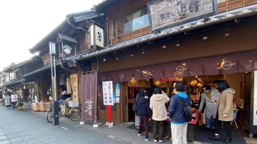

人の温かさが魅力の川越。
川越の魅力とは
川越のどこに住んでいるかまでは流石に言えないのですが（笑）、私は歴史好きでもあるので、そういった視点でも川越が好きです。上京する以前から川越の名は知っていましたし、「小江戸」という響きも好きなんですよね。
川越が「小江戸」と呼ばれているのは、江戸時代に徳川家との関わりが深かった事実があり、栃木県日光にお住まいの方は川越に憧れがあるようです。私の母が奥日光の出身なので、その影響で私も自然と川越を好きになっていました。
まだ住み始めてまだ間もないですが、「支那ソバ 玉龍」のある昭島同様に、川越のコミュニティにも魅力を感じています。人と人がどう向き合い、生きていくのかという「本質」が残っている街だと思います。商店などに行くと、人も温かいですし、痒い所に手が届くというか、ほんのりとした優しさが残ってる地域であると思います。ずっと23区に住んでいたので、隣のことすら知らないような文化の中で暮らしていましたが、川越に来て、地元の鹿児島に戻ったような印象を受けております。コロナ禍においても面白い試みをされている方も多くいると聞きますし、もっと川越を楽しみたいですね。
人の温かさが魅力の川越。
東野純直さん
音楽家、プロデューサー、ラーメン店経営者。1993年「君とピアノと」でデビュー、セカンドシングル「君は僕の勇気」などのヒット作を生み出す。コロナ禍での人々の希望を歌った最新シングル「明日のカタチ」はフジテレビ系音楽番組「Love music」の2021年1月度のエンディングテーマに起用された。2016年東京都昭島市に「支那ソバ 玉龍」をオープン。上品できれいなスープが特徴の支那ソバ 、丁寧な接客で多くのお客様に愛されている。
音楽家、プロデューサー、ラーメン店経営者。1993年「君とピアノと」でデビュー、セカンドシングル「君は僕の勇気」などのヒット作を生み出す。コロナ禍での人々の希望を歌った最新シングル「明日のカタチ」はフジテレビ系音楽番組「Love music」の2021年1月度のエンディングテーマに起用された。2016年東京都昭島市に「支那ソバ 玉龍」をオープン。上品できれいなスープが特徴の支那ソバ 、丁寧な接客で多くのお客様に愛されている。